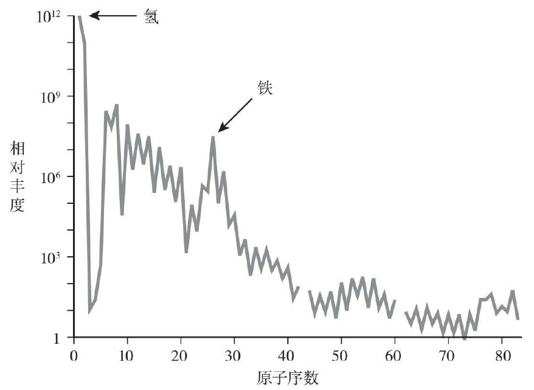

1869年，俄罗斯化学家德米特里·门捷列夫（Dimitri Mendeleyev）发表了著名的元素周期表，意在对当时已知的各种杂乱的元素进行分门别类。他按照原子量递增的顺序将所有元素进行排列，将具有相似化学性质的元素都放在同一横行（今天的元素周期表则把化学性质相似的元素放在同一纵列）。
门捷列夫排列时所用的原子量与原子质量是两个全然不同的概念。大部分元素都存在至少两种稳定的同位素原子，任何一种元素的实验室样本中通常含有多种原子质量不同的同位素。以硅为例，硅有三种天然同位素，它们的原子质量分别是28、29和30，相对丰度分别为92%、5%和3%。原子质量较大的两种硅同位素，决定了自然界中的硅的平均原子量为28.09。而化学家在发现同位素之前就已经知道如何测定元素的原子量了。
事实上，门捷列夫并非首个编写元素周期表的人，只不过他的周期表更加注重反映元素的原子序数与化学性质之间的联系。
绝大多数元素都存在一种以上的同位素，且同一元素同位素的原子序数和化学性质相同，但原子质量不同。这些发现表明了原子序数具有重要的物理意义，即元素的化学性质由其原子序数决定，而不是由原子量决定。
1932年提出原子核的中子-质子理论以后，才进一步弄清，同位素就是一种元素存在着质子数相同而中子数不同的几种原子。由于质子数相同，所以它们的核电荷和核外电子数都是相同的（质子数=核电荷数=核外电子数），并具有相同电子层结构。因此，同位素的化学性质是相同的，但由于它们的中子数不同，这就造成了各原子质量会有所不同，涉及原子核的某些物理性质（如放射性等），也有所不同。一般来说，质子数为偶数的元素，可有较多的稳定同位素，而且通常不少于3个，而质子数为奇数的元素，一般只有一个稳定核素，其稳定同位素从不会多于两个，这是由核子的结合能所决定的。
原子质量约等于原子核质量，也约等于质子质量+中子质量
质子、中子和电子的质量分别为:
mp=1.6726*10^-27kg
mn=1.6749*10^-27kg
me=9.1095*10^-31kg
初生的宇宙只有三种元素存在，分别是氢、氦和锂。
恒星中心之所以可以产生核反应，原因就在于恒星中心的压力和温度极高。在这种情况下，电子从原子上被剥离出来，只剩下由无电子的裸核和电子组成的等离子体，这种物质形态与大爆炸后最初的几分钟一样。粒子不断以超高速相互对撞。大多数时候，原子核的正电荷使它们互相排斥，这使它们无法真正结合在一起。尽管如此，每隔一会就会有两个原子核在核力的作用下克服了斥力，并紧靠在一起，从而结合成一个更大的原子核。核合成时会产生高能的γ辐射。γ辐射不断向外扩散，经过反复多次吸收和再辐射后，它的能量也在此过程中被逐渐耗尽。几千年后，这些辐射到达了恒星表面，并转化为可见光，逃逸到宇宙空间中。这就是恒星会发光的原因。


43号元素最终是在1937年被发现的，是意大利化学家卡洛·佩里埃（Carlo Perrier）和核物理学家及天文学家埃米利奥·塞格雷（EmilioSegrè）在鉴定从美国加州送来的粒子加速器样本时发现的。而它一直以来下落不明的原因也很快水落石出：原来，43号元素具有放射性，在自然界中非常罕见。事实上，佩里埃和塞格雷发现的43号元素的样本也不是纯天然的——它是在粒子加速器中用亚原子微粒轰击天然钼原子而得到的。43号元素因此得名“锝”，源于希腊文中表示“人造”的单词。科学家们早在几十年前就已经知道，重元素（如铀）的原子核在发生放射性衰变时会发生裂变，成为另一种元素。但是佩里埃和塞格雷发现，稳定的原子同样也可以生成新的元素。
碱金属是指在元素周期表中ⅠA族除氢（H）外的六个金属元素，即锂（Li）、钠（Na）、钾（K）、铷（Rb）、铯（Cs）、钫（Fr）。
碱金属有很多相似的性质：它们多是银白色的金属（铯呈金黄色光泽），密度小，熔点和沸点都比较低，标准状况下有很高的反应活性；它们易失去价电子形成带+1电荷的阳离子；它们质地软，可以用刀切开，露出银白色的切面；由于和空气中的氧气反应，切面很快便失去光泽。由于碱金属化学性质都很活泼，一般将它们放在矿物油中或封在稀有气体中保存，以防止与空气或水发生反应。在自然界中，碱金属只在盐中发现，从不以单质形式存在。 碱金属都能和水发生激烈的反应，生成强碱性的氢氧化物，并随相对原子质量增大反应能力越强。
碱土金属指ⅡA族的所有元素，共计铍（Be）、镁（Mg)、钙（Ca）、锶（Sr）、钡（Ba）、镭（Ra）六种，碱土金属在自然界均有存在，前五种含量相对较多，镭为放射性元素，由玛丽·居里（M.Curie）和皮埃尔·居里（P.Curie）在沥青矿中发现。
碱土金属的单质为银白色(铍为灰色)固体，容易同空气中的氧气作用，在表面形成氧化物，失去光泽而变暗。它们的原子有两个价电子，形成的金属键较强，熔、沸点较相应的碱金属要高。单质的还原性随着核电荷数的递增而增强。
碱土金属的硬度大于碱金属，锶、钙、钡可用刀子切割，新切出的断面有银白色光泽，但在空气中迅速变暗。其熔点和密度也都大于碱金属，但仍属于轻金属。
碱土金属的导电性和导热性能较好。
碱土金属的碳酸盐不溶、硫酸盐随着原子序数增加，溶解度逐渐减小。i
碱土金属（铍除外）在空气中加热时，发生燃烧，产生光耀夺目的火光，形成氧化物（钡形成过氧化物）。
镧系金属为银白色，较软，有延展性。
镧系元素都是活泼金属，具有非常强的还原能力，活性仅次于碱金属和碱土金属，都是稀土元素的成员。
稀土元素并不稀少，但在地壳中分布分散，彼此性质相似，难以提取、分离。
我国稀土——储量大、分布广、矿种齐全、易开采。南方以重稀土为主，内蒙古以轻稀土为主。
镧系金属是强还原剂，其还原能力仅次于Mg，其反应性可与铝比。
镧系元素应用极为广泛。化学工业上主要用作催化剂。
此外，电视工业中大量使用的荧光粉为某些稀土化合物，此荧光粉用于制造电视荧光屏。
钢铁中加入少量稀土元素，可大大改善钢的机械性能，因此稀土元素可称为钢铁的“维生素”。例如在生铁里加进铈，可得到球墨铸铁，使生铁具有韧性且耐磨，可以铁代钢，以铸代锻 。
此外，农业上用稀土元素可使粮食增产10%~20%，白菜增产29%，大豆增产50%，还可提高西瓜的产量和甜度，因此用作高效微量肥料。
ⅢB族中原子序数为89～103的 15种化学元素的统称。包括锕、钍、镤、铀、镎、钚、镅、锔、锫、锎、锿、镄、钔、锘、铹，它们都是放射性元素 。铀以后的原子序数为93～109的17 种元素称为超铀元素。前6种元素锕、钍、镤、铀、镎、钚存在于自然界中，其余9种全部用人工核反应合成。
锕系元素都是金属，与镧系元素一样，化学性质比较活泼。
在人工合成的锕系元素中，只有钚、镎、镅、锔的年产量达千克级以上，锎仅为克量级，锿以后的元素量极少，半衰期很短，仅用于研究。用途比较多的只限于铀和钍，钚在某些情况下用作核燃料。
“过渡元素”这一名词首先由门捷列夫提出，用于指代第VIII族元素。他认为从碱金属到锰族是一个“周期”，铜族到卤素又是一个，那么夹在两个周期之间的元素就一定有过渡的性质。这个词虽然还在使用，但已失去了原意。 过渡金属元素的一个周期称为一个过渡系，第4、5、6周期的元素分别属于第一、二、三过渡系。
21-30
39-48
72-80
104-108
硼、硅、砷、碲、锑等
准金属（metalloid），又称为半金属（semimetal），介于金属和非金属之间的物质。准金属是一种元素，其外表呈现出金属的特性，但在化学性质上却表现出金属和非金属两种性质。例如砷和锑，它们是坚硬的结晶固体，外表显然是金属，但是当进行化学反应时就表现出金属和非金属两种不同的性质。它们的一些氧化物既溶于酸，也溶于碱，这就是所谓的两性性质，因为它们的性质既像碱又像酸。有许多元素也能生成两性化合物。然而只有当这种化学性质的二元性十分明显、同时显出金属的外表时，才能称这种元素为准金属。
贫金属（poor metal）并不是严谨的化学术语，指这些金属比其他金属更软、更弱、沸点更低。通常包括铝、镓、铟、锡、铊、铅和铋，有时也包括锗、锑和钋。位于113 - 116号的鉨、鈇、镆和鉝元素很可能具有贫金属的特性，但目前还没有足够的数量来合成它们来检查它们的化学性质 [1] 。